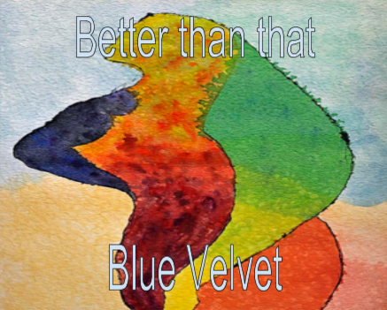

Challenge: Design a Band
Challenge Information
In this challenge, we learn about design thinking. Design thinking is the process of creating a design. This helps us be creative and think outside of the box, but also we have to use emphathy. We have to understand the design what it's purpose.The DEEP design thinking process is when you have all these contributing ideas and you collabrate them into one randome masterpiece that still has empathy. I choose this album cover because it was very abstract and have various amounts of color that really caught my attention. Also I love the shape of the abstract piece. Its a women and it illustates a bold statement.
Album Cover
Background Story:
Matty, Van, Rob and Bob first created this band in their junior year in High School. They had a real passion for music, so what better way to express their passion than to form a band. It all stared in Matty's garage in Portland, Oregan. The band just practiced once a month nothing serious. One day Van got them a gig at the local bar called "Blue Velvet". They played their first song there it was called "Better than that". Ever since that gig they started to become famous. Their music started reaching the world. They decided to create an album because they started getting big. Their art cover for their album had to be abstract becaus it was their favorite type of art and it had to have some type of color to give it a more lighten vibe. The figure of the shape is obviously a women and that gives that makes the picture more eye catching, so they decided on the photo above.
Inspired Bands:
Better than that always looked up to The Strokes because of their genre of music. Julian had this angelic voice that had a rough patch. The band's name was a funny inpertation and it just stuck. The cover art for their album was abstract and had various color schemes, such as blue, yellow, black, etc.